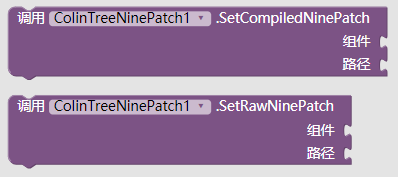
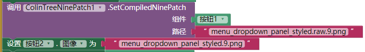
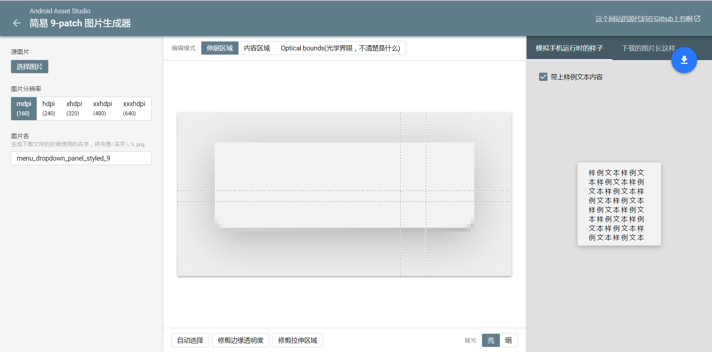

9-patch位图显示器 - ColinTreeNinePatch
部分解释引用自Android 的 9-patch 图片是什么？ - 知乎
在以往，使用Appinventor 或 Thunkable 的过程中，大家经常会遇到一个问题：显示图片时，拉伸导致的变形以及模糊化
在原生安卓中固然会有这种问题，但是谷歌的工程师们怎么可能忍受得了这么严峻的审美挑战呢
于是，9-patch诞生了。
简单的说，9 patch 格式可以描述出一张图片哪些地方是可以拉伸的。
举个例子，你看到QQ气泡框，无论你发多长的文字，图片中间都被填充，四周图片按原比例显示，这样就解决了不同长度图片可能被拉伸的问题。
现在，通过NinePatchChunk库（作者Anatolii发布于Github） 和 ColinTree的整合，NinePatch技术在Appinventor 和 Thunkable中可以轻松实现。
所有方法
- 将已经编译过的9patch设为组件的背景图 - SetCompiledNinePatch
- 将未编译过的9patch设为组件的背景图 - SetRawNinePatch
- 参数解释：
- component - 组件
例如：
通常是每一个组件的最下面一个代码块 - path - 图片路径，和ai其他部分的路径规则相同
例如：
sample.9.png - 上传文件目录下的sample.9.png文件
- component - 组件

下载地址
- 最后更新 2017.8.31
- 下载1(本站)
样例
现有一张已经编译过的素材menu_dropdown_panel_styled.9.png
如果使用ColinTreeNinepatch设置到按钮上，可以正常显示为9patch样式
而如果使用按钮自带的设置按钮图片，则会放大并模糊化

9-patch制作
这里有一个纯英文的在线9-patch制作器
推荐：下载下来的压缩文件中，折中选择"res\drawable-xhdpi\"文件夹里的图片进行下一步操作即可
然后我把页面大概翻译了一下：

9-patch编译器
为了方便编译，我从Android Studio中提取了必要的文件(aapt.exe)，并写了一个批处理脚本，用于Windows系统上的9-patch文件编译
将压缩文件解压之后，把需要编译的.9.png文件（还带着黑线条的9-patch图片）用鼠标拖动到ColinTree_9patch_compiler.bat上
等待编译完成，在OUTPUT文件夹中即可找到编译过后没有黑线的.9.png文件。
已经编译过的文件会把黑线所表达的信息写入图片中，凭肉眼无法识别，但Android运行中可以读取得到。所以在编译过后不要对图片做任何的处理！
- 最后更新 2017.8.31
- 下载1(本站)